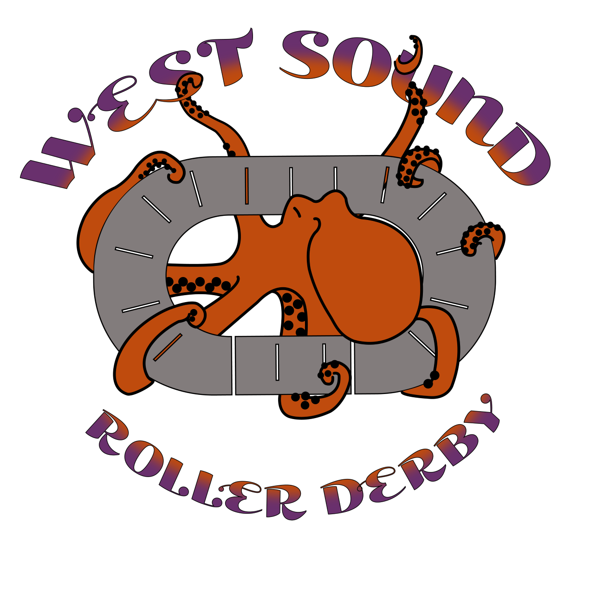
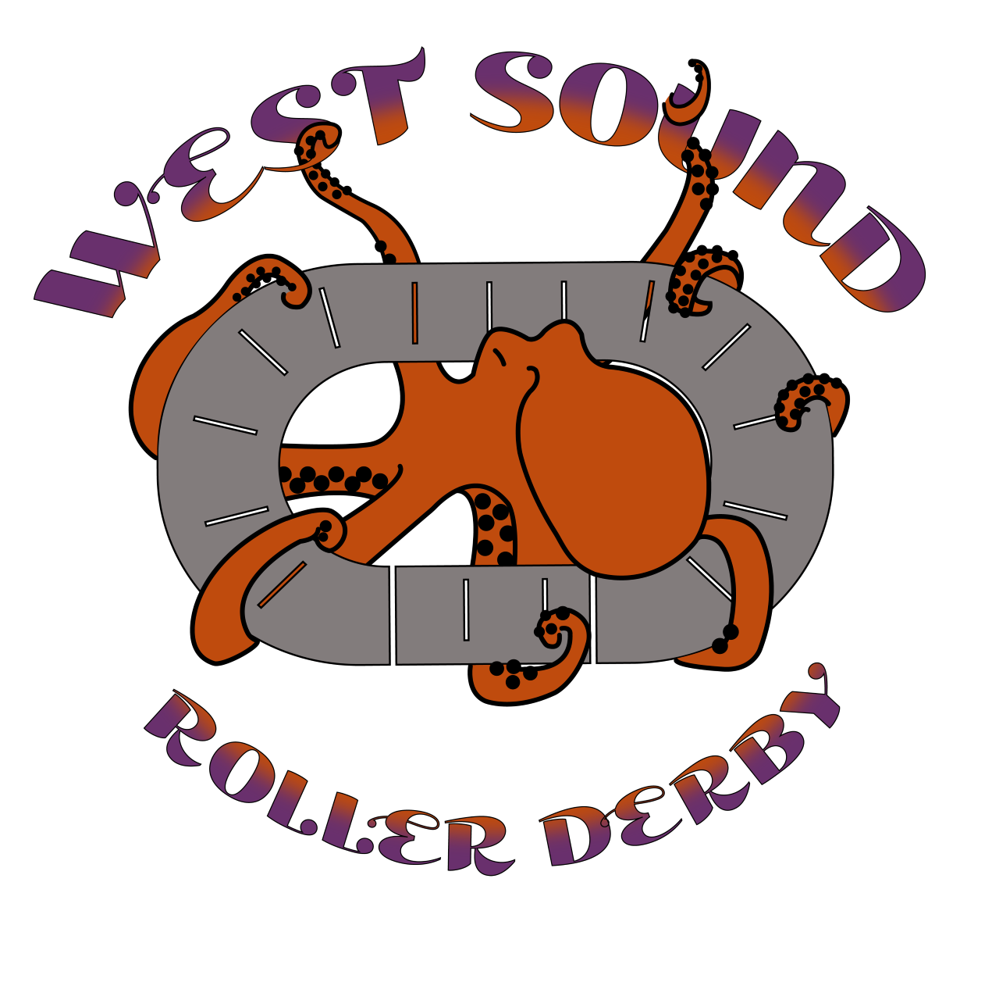

Monthly newsletter! Sign up for updates on Bremerton Zine Fest, free resources, news, and probably other cool stuff.
Upcoming Events
Date 2024 |
When & Where |
|---|---|
| June 20 |
SPARK COMMONS FEMMES & THEMS 4:30 - 8:00 pm | 258 4th St Bremerton |
| June 30 |
ASHLEY'S PUB 21+ 2:00 - 4:00 pm | 409 Pacific Bremerton |
| July 12 |
ASHLEY'S PUB 21+ 5:00 - 7:00 pm | 258 4th St Bremerton |
| July 20 |
SALMONBERRY BOOKS 11:30 am - 1:30 pm | 715 Bay St Port Orchard |
| July 28 |
ASHLEY'S PUB 21+ 5:00-7:00pm | 258 4th St Bremerton |
About
Bremerton Zine Fest celebrates local DIY creativity. The first Zine Fest in Bremerton was in 2023 at Evergreen Park.
Friends & Sponsors
 



News
-
Kitsap Scene | August 23, 2023
Bremerton’s first zine fest celebrates DIY creativity
“Because everything is so digitized and online, having a piece of art that you can take with you and that is physical … there’s something special about something that someone poured their heart into,” Gray said. “And the zine culture is very much welcoming and inclusive and it’s less about making money and more about passion.” The festival was a buy-sell-trade event, she added. Read the full article on Kitsap Scene
-
Smokestack | August 4, 2023
Kitsap Gets A Zinefest: Local Artist Dani Gray Says ‘Why Not,’ Sets Out To Build A Small Press Festival
What drives my passion for zines is that they are rad,” says Gray, who met Moriarity at a local art show when she purchased one of his ‘Zine Machine’ prints. “I have a huge collection of zines that range from super heavy and political stuff to ‘My Favorite Kind Of Mustard.’ There’s a full range. They can be really fancy and embossed or simply one sheet of paper. They can be filled with all words or all graphics. They can be anything… I think it’s the most accessible form of creation. All you need is a piece of paper. Read the full article on Kitsap Smokestack